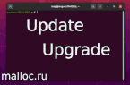
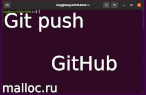

<!DOCTYPE html><html/><title>Статьи</title><meta http-equiv="content-type" content="text/html; charset=utf-8"/><meta name="description" content="Статьи сайта посвящаны теории и практике программирования. Программист делиться опытом и показывает все на примерах, которые подкреплены видео инструкцией. Подробнее..."/><meta name="viewport" content="width=device-width, initial-scale=1"/><link rel="stylesheet" href="css/style.css"/><link rel="stylesheet" href="https://cdnjs.cloudflare.com/ajax/libs/font-awesome/4.7.0/css/font-awesome.min.css"/><script>document.oncontextmenu = cmenu; function cmenu(){ return false; }</script><!-- Body --><body lang="ru-RU" class="unselectable"/><noscript/></noscript><!-- Topbar --><nav class="malloc-top malloc-bar malloc-theme-main malloc-left-align malloc-large malloc-card" style="border-radius:15px;"/><a class="malloc-bar-item malloc-button malloc-right malloc-hide-large malloc-hover-white malloc-large malloc-theme-l1" href="javascript:void(0)" onclick="malloc_open()"/><i class="fa fa-bars"/></i></a><a href="index.html" class="malloc-bar-item malloc-button malloc-hover-white" style="border-radius:15px;"/>главная</a><a href="articles-1.html" class="malloc-bar-item malloc-button malloc-hover-white malloc-theme-l1" style="border-radius:15px;"/>статьи</a><a href="about.html" class="malloc-bar-item malloc-button malloc-hover-white" style="border-radius:15px;"/>донат</a></nav><!-- Sidebar --><nav class="malloc-sidebar malloc-bar-block malloc-collapse malloc-large malloc-theme-d1 malloc-animate-left" id="mySidebar"/><a href="javascript:void(0)" onclick="malloc_close()" class="malloc-right malloc-xlarge malloc-padding-large malloc-hover-black malloc-hide-large" title="Закрыть"/><i class="fa fa-remove"/></i></a><!-- Статьи --><hr class="malloc-border-blue" style="margin-top: 30px"/><h2 style="font-size:15px;" class="malloc-center">Cтатьи</h2><h3 class="malloc-bar-item malloc-botton malloc-hover-blue" id="sidebar-article-0" style="font-size:12px; border-radius:15px;">Как обновить Ubuntu через терминал;</h3><h3 class="malloc-bar-item malloc-botton malloc-hover-blue" id="sidebar-article-1" style="font-size:12px; border-radius:15px;">Как отправить существующий проект на GitHub;</h3></nav><!-- Overlay effect when opening sidebar on small screens --><div class="malloc-overlay malloc-hide-large" onclick="malloc_close()" style="cursor:pointer" title="close side menu" id="myOverlay"/></div><!-- Main content: shift it to the right by 210-275 pixels when the sidebar is visible --><div class="malloc-main malloc-auto" style="margin-left:220px"/><!-- main{ --><div class="malloc-row malloc-padding-64"/><!-- { --><!-- Список статей --><div class="malloc-threequarter malloc-padding"/><!--}--><h1 class="malloc-center malloc-theme malloc-card malloc-auto malloc-cursive" style="border-radius:15px;">Статьи</h1><!--0--><div class="malloc-padding-large"><div class="malloc-botton malloc-text-blue malloc-hover-blue malloc-padding-small malloc-border malloc-border-green malloc-cursor-link-underline malloc-hover-border-white malloc-card malloc-nter" id="article-0" style="font-size: 18px; border-radius:15px;" title="Обновление Linux на примере дистрибутива Ubuntu. Обновление операционной системы показано через терминал. Используются команды update, а потом upgrade. В итоге делаем исполняемый файл, в котором будут храниться все наши команды. Подробнее..."/>Как обновить Ubuntu через терминал</div></div><!--1--><div class="malloc-padding-large"><div class="malloc-botton malloc-text-blue malloc-hover-blue malloc-padding-small malloc-border malloc-border-green malloc-cursor-link-underline malloc-hover-border-white malloc-card malloc-nter" id="article-1" style="font-size: 18px; border-radius:15px;" title="Создаем локальный репозиторий git и отправляем его на удаленный репозиторий GitHub. В статье присутствует пошаговая инструкция и есть видео, в котором показано все на практике. Автор показал как использует исполняемый файл .sh для выполнения push на GitHub. Подробнее..."/>Как отправить существующий проект на GitHub</div></div></div><!--}--><!-- Правый сайдбар { --><div class="malloc-quarter malloc-center malloc-text-gray malloc-padding-64" title="Новости"/><div class="malloc-center malloc-container malloc-text-grey malloc-card" title="Новости" style="border-radius:15px;"/>Новости-Malloc.RU<textarea class="malloc-container malloc-theme-l1" id="news" lass="unselectable"/></textarea></div><div class="malloc-center malloc-padding-16"/><div style="display:inline-block; font-size:12px;border-radius:15px;" class="malloc-card malloc-padding-small malloc-theme-clock"/><div id="mytime" style="display:inline-block; margin-right: 5px" title="Время"/></div>|<div id="mydate" style="display:inline-block; margin-left: 1px" title="Дата"/></div></div></div></div><!-- } Правый сайдбар --></div><!-- } --></div><!-- } main --><!----><!-- Footer --><div class="malloc-padding-64 malloc-ad-mobile"/><div class="malloc-padding-64 malloc-ad-mobile"/></div><div class="malloc-padding-32 malloc-ad-mobile"/></div></div><div class="malloc-padding-64 malloc-ad-desktop"/></div><footer/><div class="malloc-threequarter"/><div class="malloc-container malloc-theme-l4 malloc-padding-large malloc-ad-desktop" style="font-size:12px; margin-left:270px; border-radius:15px;"/><!-- Ссылки --><ul class="malloc-ul malloc-col"/><b/>Донат:</b><div class="malloc-padding-12"/><div id="Donat-footer" class="malloc-hover-red" style="border-radius:5px;"/>На книги</div><div id="Dream-footer" class="malloc-hover-red" style="border-radius:5px;"/>На мечту</div><div id="Question-footer" class="malloc-hover-red" style="border-radius:5px;"/>Звдать вопрос</div></div></ul><!-- Соц. сети --><ul class="malloc-ul malloc-col"/><b/>Каналы:</b><div class="malloc-padding-12"/><div id="Telegram-footer" class="malloc-hover-green" style="border-radius:5px;"/>Телеграм</div><div id="Youtube-footer" class="malloc-hover-green" style="border-radius:5px;"/>Youtube</div></div></ul><!-- Допольнительно --><ul class="malloc-ul malloc-col"/><b/>Дополнительно:</b><div class="malloc-padding-12"/><div id="Topmail-footer" class="malloc-hover-white" style="border-radius:5px;"/>Рейтинг сайта</div><div id="Payeer-footer" class="malloc-hover-white" style="border-radius:5px;"/>Payeer</div></div></ul></div><!-- Copyright --><div class="malloc-container malloc-theme-l5 malloc-card malloc-ad-desktop" style="margin-left:270px; border-radius:15px;"/><h6 class="malloc-center" title="Все права защищены">&copy; malloc.ru, 2021</h6></div><!-- Copyright --><div class="malloc-container malloc-theme-l2 malloc-card-4 malloc-ad-mobile" style="border-radius:15px;"/><h6 class="malloc-center" title="Все права защищены">&copy; malloc.ru, 2021</h6></div></div></footer><!--JScript --><script src="js/articles-1.js"/></script><script src="js/news.js"/></script></body></html>
